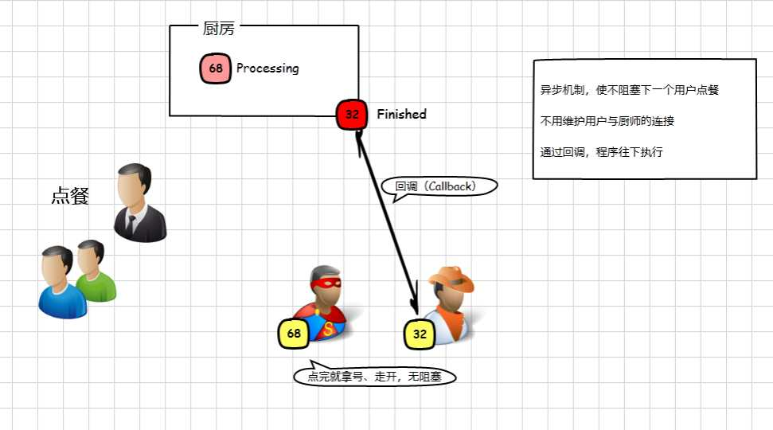

Node.js入门知识
导读：在这一部分的内容里，主要会简单介绍一下什么是Node.js，它有哪些用武之地，我们为什么要去学习它。另外，还会简单的讨论下Nodejs的优缺点以及适用场景。
基本介绍
Node.js 是一个基于 Chrome V8 引擎的 JavaScript 运行环境。Node.js 使用了一个事件驱动、非阻塞式 I/O 的模型，使其轻量又高效。Node.js 的包管理器 npm，是全球最大的开源库生态系统。
以上提到的运行环境，我们可以这样理解：
JS本身是脚本语言，脚本语言都需要一个解析器才能运行。对于写在HTML页面里的JS，浏览器充当了解析器的角色。 而对于需要独立运行的JS，NodeJS就是一个解析器，是JS语言的服务器运行环境，使其流畅的运行于服务器端。
Nodejs的特点是：
JavaScript运行环境，相当于js在服务端的一个宿主环境
依赖于Chrome V8引擎进行代码解释，V8引擎执行Javascript的速度非常快，性能非常好。
事件驱动
非阻塞I/O
轻量、可伸缩，适于实时数据交互应用
单进程，单线程
Node提供核心功能模块，使得JavaScript语言可以实现文件的读写、进程管理以及网络通信等功能，在这个意义上，Node又是JavaScript的工具库。
为什么要学nodejs
包括但不限于以下几点。
Nodejs市场活跃
- 从npmjs.org社区可以看到，有超过20W的第三方package，每天亿级以上的下载量。
- github.com上搜索node相关的项目，15万个以上。
- 而且社区非常活跃，参与的开发者众多
Nodejs应用广泛
我们来看使用nodejs可以做什么：
- 项目管理：npm,grunt, gulp,bower, yeoman
- 桌面应用: node-webkit
- Web开发：express,ejs,hexo, socket.io, restify, cleaver, stylus, browserify,cheerio
- 工具包 underscore,moment,connet,later,log4js,passport,passport(oAuth),domain,require,reap,commander,retry,PDFkit
- 数据库：mysql,mongoose,redis,memcached
- 异步：async,wind,eventProxy,bluebird
- 部署：forever,pm2,nodemon
- 测试：jasmine,karma,protractor
- 跨平台：rio,tty
- 内核：cluster,http,request
- 模板: jade
- 博客: ghost,hexo
- 微信: weui
- 硬件控制: NoduinoWeb
- 操作系统: NodeOS
可以这么说，其他语言能做的事情，nodejs都可以做，甚至可以做的更好（不知道这样说会被会被人喷）。当然，更需要结合业务具体分析进行技术选型。
推荐关注
github：在这里可以找到大量nodejs相关的项目，阅读源码源码，查看新技术的一手资料
nodejs官网：关注Node版本更新，包括api功能及使用、bug修复、新增特性以及未来的发展趋势
npm官网：在这里搜索你想用的包，参考别人的源代码
stackoverflow问答社区：有什么疑惑直接在这开问吧，会有很多热情的好基友来帮你解答问题的，比如服务异常、配置什么的。
NodeJS优缺点及适用场景讨论
基于以上提及的Nodejs特性，我们来看在实际系统问题中是如何体现其优势的。
Nodejs的出现为我们解决现实当中系统瓶颈提供了新的思路和方案
解决并发连接的问题
对于并发连接的问题讨论，为了有更直观的理解，我们来看以下三个模型：
- 系统线程模型

这种模型的问题显而易见，服务端只有一个线程，并发请求（用户）到达只能处理一个，其余的要先等待，这就是阻塞，正在享受服务的请求阻塞后面的请求了。
- 多线程、线程池模型

这个模型已经比上一个有所进步，它调节服务端线程的数量来提高对并发请求的接收和响应，但并发量高的时候，请求仍然需要等待。它有个更严重的问题，即服务端与客户端每建立一个连接，都要为这个连接分配一套配套的资源，主要体现为系统内存资源，以PHP为例，维护一个连接可能需要20M的内存。这就是为什么一般并发量一大，就需要多开服务器的原因。
- 异步、事件驱动模型
那么我们来看nodejs是如何处理这个问题的

我们同样是要发起请求，等待服务器端响应；但不同的是，点完餐拿到号码后，我们往往会在位置上等待，而在我们后面的请求会继续得到处理，同样是拿了一个号码然后到一旁等待，接待员能一直进行处理。
等到饭菜做好了，会喊号码，我们拿到了自己的饭菜，进行后续的处理（吃饭）。这个喊号码的动作在NodeJS中叫做回调（Callback），能在事件（烧菜，I/O）处理完成后继续执行后面的逻辑（吃饭），这体现了NodeJS的显著特点：异步机制、事件驱动整个过程没有阻塞新用户的连接（点餐），也不需要维护已经点餐的用户与厨师的连接。
基于这样的机制，理论上陆续有用户请求连接，NodeJS都可以进行响应，因此NodeJS能支持比Java、PHP程序更高的并发量。
虽然维护事件队列也需要成本，但由于NodeJS是单线程，事件队列越长，得到响应的时间就越长，并发量上去后面对CPU密集型模型的时候就还是会力不从心，因此依然被部分人诟病。但好在，活跃的社区在持续的解决各种问题，应运而生的threads-a-gogo（以下简称TAGG）这个模块就是让node支持多线程模型。
总结一下NodeJS是怎么解决并发连接这个问题的：更改连接到服务器的方式，每个连接发射（emit）一个在NodeJS引擎进程中运行的事件（Event），放进事件队列当中，而不是为每个连接生成一个新的OS线程（并为其分配一些配套内存）。
解决I/O阻塞的问题
NodeJS解决的另外一个问题是I/O阻塞，看看这样的业务场景：需要从多个数据源拉取数据，然后进行处理，处理的方式有：
- 串行获取数据，这是我们一般的解决方案
- NodeJS非阻塞I/O，是通过发射/监听事件来控制执行过程
NodeJS遇到I/O事件会创建一个线程去执行，然后主线程会继续往下执行，事件代理接收到线程后继续往下执行后面的逻辑，这就是NodeJS非阻塞I/O的特点。
我们来看以下示例：
/**
* [require description]
* @param {[type]} 'events' [description]
* @return {[type]} [description]
*/
var EventEmitter = require('events').EventEmitter;
var event = new EventEmitter();
event.on('eat', function() {
console.log('开饭啦');
});
console.log('我要先去散步');
setTimeout(function() {
event.emit('eat');
}, 1000);
综合对比分析
- Nodejs具有处理高并发的能力（最重要的优点）
- Nodejs适合I/O密集型应用
- Nodejs不适合CPU密集型应用；CPU密集型应用给Node带来的挑战主要是：由于JavaScript单线程的原因，如果有长时间运行的计算（比如大循环），将会导致CPU时间片不能释放，使得后续I/O无法发起；
解决方案：分解大型运算任务为多个小任务，使得运算能够适时释放，不阻塞I/O调用的发起；或者使用第三方模块，让Node也可以创建多进程。
当然，也有很多人吐槽：
只支持单核CPU，不能充分利用CPU
可靠性低，一旦代码某个环节崩溃，整个系统都崩溃，原因是nodejs是单进程单线程
But，现在我们都有解决方案： （1）Nnigx反向代理，负载均衡，开多个进程，绑定多个端口； （2）开多个进程监听同一个端口，使用cluster模块；
戳这里了解更多
总而言之，NodeJS适合运用在高并发、I/O密集、少量业务逻辑的场景。